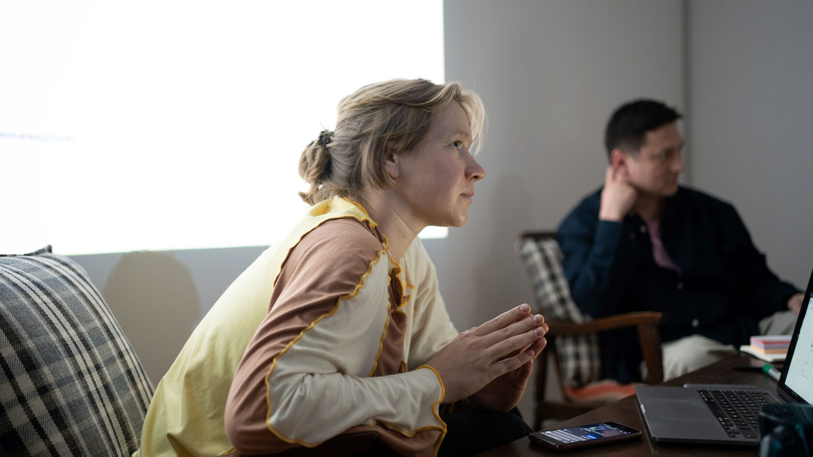

Mikhail Borodin
Director · Producer · TFS co-founder
TFS is an independent school and creative platform supporting filmmakers and visual artists through practice, community and international dialogue.

Access to professional tools and mentorship.
Ethical, inclusive and collaborative education.
Stories that challenge norms, recover memory and expand visual language.
Founded in 2022, Tashkent Film School has grown into an educational hub where emerging filmmakers from Uzbekistan and across Central Asia can gain professional tools and mentorship.
The TFS mission materials describe cinema as a tool for storytelling, memory and social transformation. The school aims to build a diverse and safe space for collaboration and to bring Central Asian perspectives into the global cinematic conversation.

Director · Producer · TFS co-founder

Creative producer · Mentor
+998 90 826 21 35
10 Sokrat st · Tashkent · Uzbekistan